v2022.10.04 and higher for this Custom Task now import groups of images set using the gallery control on mobile devices.
v2022.10.04 and higher for this Custom Task now import groups of images set using the gallery control on mobile devices.The BP Logix Mobile Application (Mobile App) component is a separately-licensed component for Process Director Cloud installations or on-premise installations that use the Subscription licensing model. The Mobile App component enables you to use a mobile application that supports both online and offline form submission on phones, tablets, and other mobile devices. Forms can be filled out by mobile users even when the user has no internet connectivity on the mobile device, and the mobile application will sync Form instances with the mobile server when internet connectivity is restored. Forms submitted via the mobile application are stored on the mobile server until they are imported into Process Director.
The Mobile App component provides access to the following features.
Once the license for the Mobile App component is purchased, administrators will be provided with a login to access the Mobile Server at https://mobile.bplogix.com. Additionally, mobile component custom variables will be provided for on-premise customers, or set by BP Logix for Cloud customers. These custom variables must be configured in the Custom Variable file prior to using the component, and are documented in the Mobile Application Custom Variables topic of the Developer's Guide.
Once the Custom Variables for the component have been configured, access to the Mobile Application component is granted from the User Administration section of the IT Admin Area on the Users page. From the list of users, select the user you'd like to edit by clicking the Edit link to open the User Profile page for that user. Two properties listed in the User Profile page, Mobile Admin User and Mobile App User, as described in the User Administration topic of the System Administrator's Guide will, when checked, enable the user with appropriate access to the Mobile App.
To access the mobile server's administrative features, such as importing a Form or Data Source, a user must be specified as a Mobile Admin User. Access to the Mobile app is granted separately by checking the Mobile App User property. When these properties are checked, the users are automatically added to the mobile server with the appropriate level of access. In most cases, an administrator will need to have both the Mobile Admin User and Mobile App User properties checked.
Please note that, as a mobile administrator, you should never add or delete users from the mobile server directly. User access should be managed only from the User Administration page in Process Director, and not from within the mobile server itself.
Form definitions for properly configured installations will display a new action link, labeled Download Field List, on the Properties tab of the Form definition.
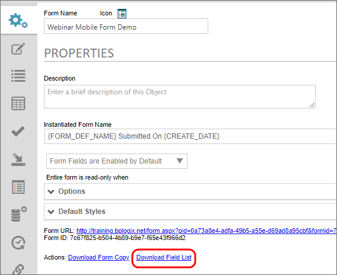
Clicking this link will create a new Excel spreadsheet that will be automatically downloaded to your local machine.
Using a web browser, navigate to the URL assigned as the mobile server URL for your installation, e.g., "https://mobile.bplogix.com".
The user interface for the BP Logix Mobile Server has a navigation menu on the left side of the screen, and displays the configuration page for the selected menu item on the right side of the screen. Please note that the menu items available to you on the left side of the screen may not display all of the items shown in the screenshots for this topic, based on your level of access to the mobile server.
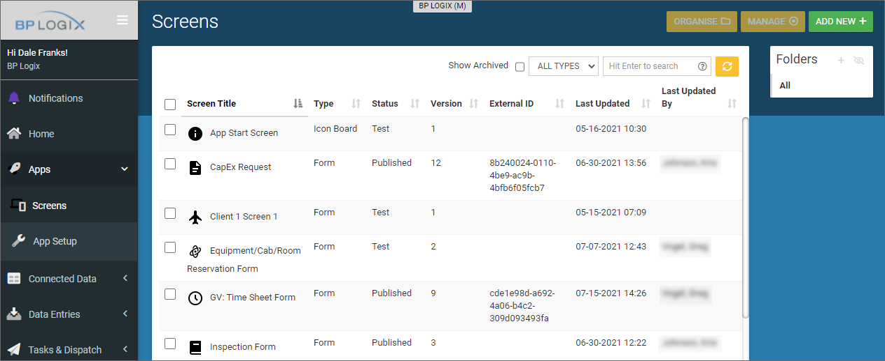
On the mobile server, each Form that you import from Process Director will be called a "Screen ". To create a new Screen, or to see a list of existing Screens, click on the Apps menu, then click the Screens submenu to display all of the form Screens that exist on the mobile server.
To import an Excel file for a new Screen, you must first create a new, blank Screen by clicking the Add New button at the top right corner of the screen. Clicking this button will open the Create New Screen dialog box.
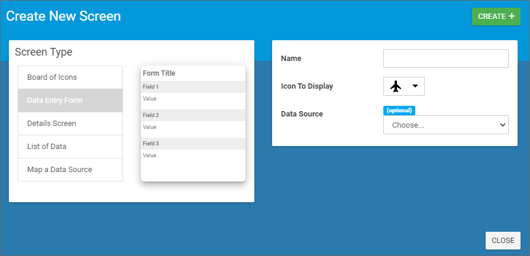
On the left side of the dialog box, keep the default setting of Data Entry Form. On the right side, enter a Name for the new form. This name will be temporary if you are importing a Form, since the Screen's Name will be overwritten by the Process Director Form's name when the Excel file is imported. Next, select an icon to use as the Screen icon from the Icon to Display dropdown. Finally, if you wish to associate the new Screen with a data source (for instance, to fill a set of dropdown options), select the data source from the Data Source dropdown. We will discuss importing data sources elsewhere in this topic.
Once you've configured the placeholder for your Form, click the Create button to create the placeholder Screen. The new Screen will be created, and the Design view for the new screen will appear. For this example, we have named the Screen, "Placeholder Screen".
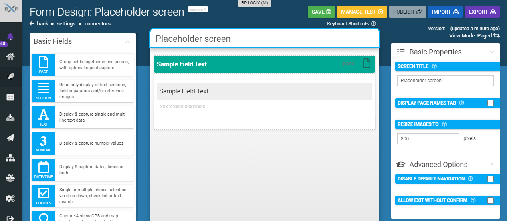
We are now ready to import the Excel file for our Form definition.
Click the Import button to open the Import Form Fields From File dialog box.
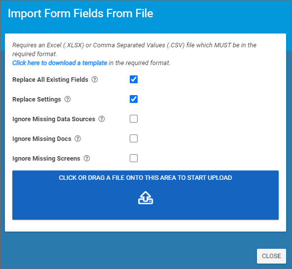
In the dialog box, ensure that both the Replace All Existing Fields and Replace Settings properties are checked. The Replace All Existing Fields property is checked by default, but you must manually check the Replace Settings property. The Replace Settings property is very important, because in addition to the form fields, the Excel file also contains the Process Director Form settings, including the Form ID, that must be imported into the mobile server. If you don't check this property, the correct form settings will not be imported into the Mobile Server. We will address this again at the end of this section.
Next, click the button labeled, Click or drag a file onto this area to start upload. You can drag and drop files onto this button, or simply click the button and navigate to the Excel file using the Open dialog box.
Once the Excel file is selected, the mobile server will automatically import the Excel file, overwrite the existing settings for the Screen with the settings contained in the Excel file, and import the Form fields to the mobile Screen.
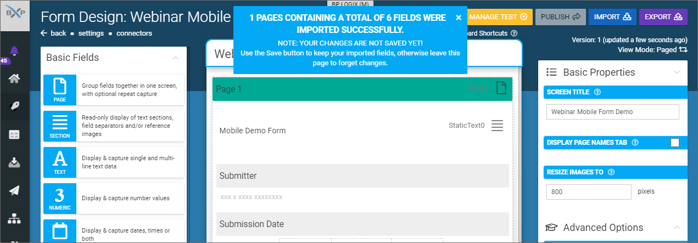
You now need to save the new Screen by clicking the Save button. The Save button will be hidden behind the notification banner that appears at the top of the page to notify you that the import was successful. You must close the banner to access the Save button.
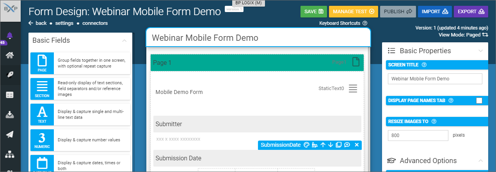
Once the form is saved, you may, optionally, edit the Screen to change fonts, colors, apply data sources to fill dropdowns, etc. Editing options for any selected item on the screen are configured via the properties that appear in the column on the right side of the window. Once the Screen has been edited to your satisfaction, you can click the Save button to save your changes.
When you are ready to make the form available to users of the Mobile Application, click the Publish button. The Move Test Entries To Trash? dialog box will appear. You can publish a form multiple times to test and edit the form. This dialog box gives you the opportunity to send any existing Form entries to the trash bin.
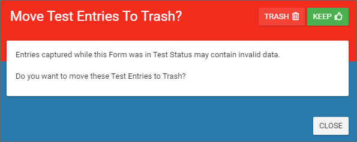
You can choose to Trash or Keep the existing entries by clicking the appropriate button. Once published you can navigate back to the Screens window to see the new Screen, which has now been renamed, in this example, Webinar Mobile Form Demo.
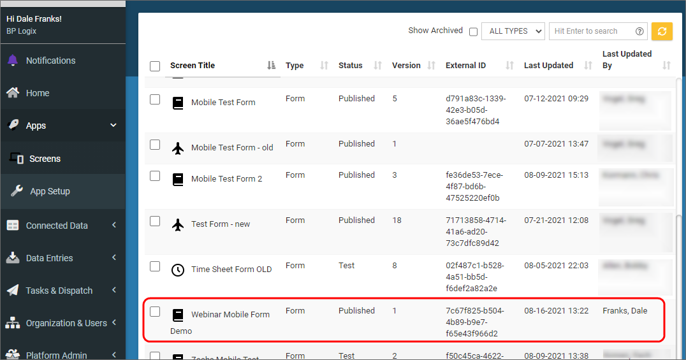
Now that the form has been published, users of the mobile application will be able to access it.
As mentioned above, the Replace Settings property will import the FormID from Process Director. This FormID will be displayed in the Screens page in the External ID column, as shown in the image above. The External ID must match the FormID of the Form in Process Director, or you won't be able to import the Form instances back into Process Director from the mobile server. The Form will work inside the mobile application, and submissions will be saved to the mobile server, but without the correct Form/External ID reimport to Process Director won't be possible.
The BP Logix mobile application is available for both Android and iOS mobile devices. When a new Screen is published, it will be synchronized to the mobile device of every user. This synchronization will occur the first time the user opens the mobile device in a place where they have Internet connectivity to access the mobile server. Assuming a user has mobile connectivity, the synchronization occurs when the mobile app is opened on the user's device. The amount of time it will take to synchronize depends on the amount of data that must be transferred.
When synchronization is complete, the new Screen will be available to the user's Mobile App.
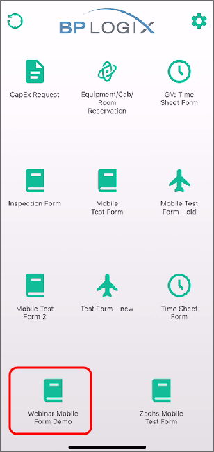
Pressing the icon for the screen will open it.
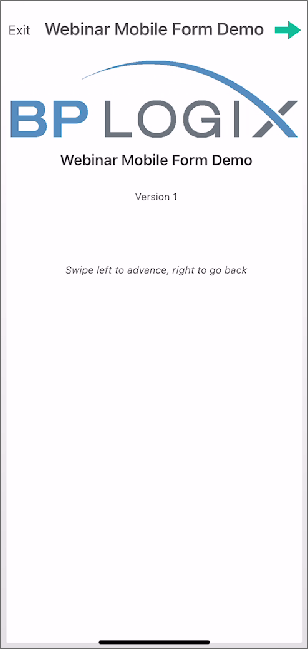
You will initially be shown a title page for the screen. You can advance forwards and backwards through the pages by swiping left or right, respectively. You can also press the arrows that appear at the top corners of the page. Swiping left will advance to the Form page, enabling you to fill out the Form.
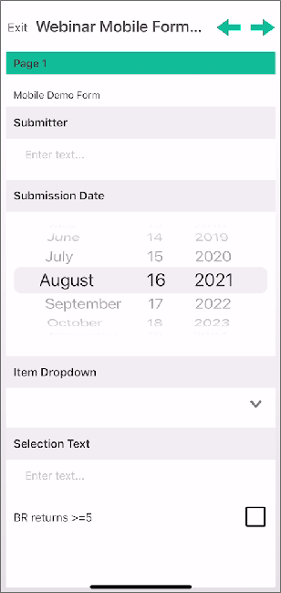
After the form is filled out, swiping left again will take you to the submission page, from which you can submit the form by pressing the Upload button. Additionally, if your mobile device is properly configured and has access to a printer, you can click the Upload & Print button to both submit the form and print a copy of it.
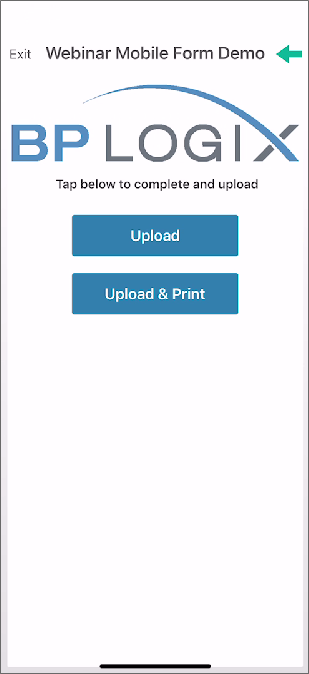
If your mobile device has Internet connectivity, the submitted form will be instantly synchronized to the server. Otherwise, the synchronization will occur the next time the mobile application is running with Internet connectivity. The form submission will be stored on the mobile device, if the device is offline, until such time as Internet connectivity is restored.
The Mobile Server will store all form submissions it receives. You can see all stored Form submissions on the mobile server by selecting the Data Entries menu, then selecting the Feed View submenu.
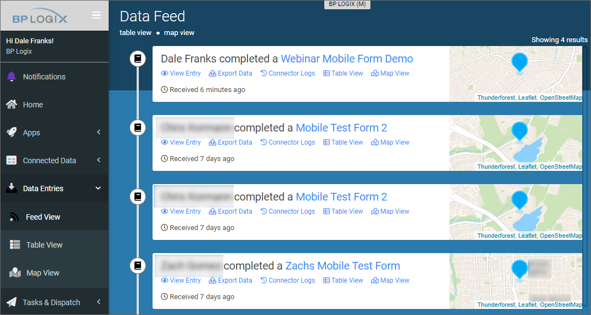
These form instances will remain stored on the Mobile Server until they are imported into Process Director.
In Process Director, a new Custom Task, Mobile Form Import, will import all of the Form instances from the Mobile Server to Process Director, where they will appear as normal form instances. The Custom Task can be run manually or automatically, and requires no user configuration. Instead, the Custom Task uses the Configuration settings that are contained in the Custom Variables folder.
BP Logix recommends that you configure the Custom Task as the only Activity that runs in a Process Timeline, then create a Goal object that runs on a scheduled basis to call the Process Timeline every time the Goal runs. This will automatically import all form instances on the schedule you configure in the Goal.
v2022.10.04 and higher for this Custom Task now import groups of images set using the gallery control on mobile devices.
External data that you wish to use in a Screen must be imported to the mobile server as a Data Source. The easiest method for importing this data is to import it via an Excel spreadsheet. In this example, we'll import a simple Excel spreadsheet to use to fill a Dropdown control on the Webinar Mobile Form Demo Screen we imported in the previous sections, above.
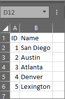
You can access the list of existing data sources on the Mobile server by navigating to the Connected Data menu item, then the Data Sources submenu.
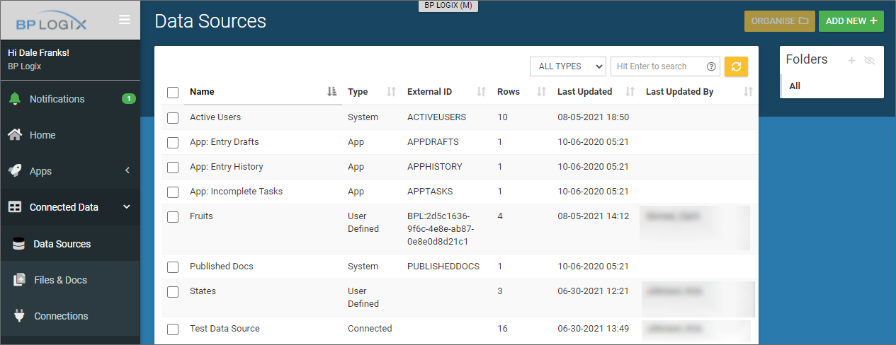
To import a new data source, click the Add New button to open the Create Data Source screen.
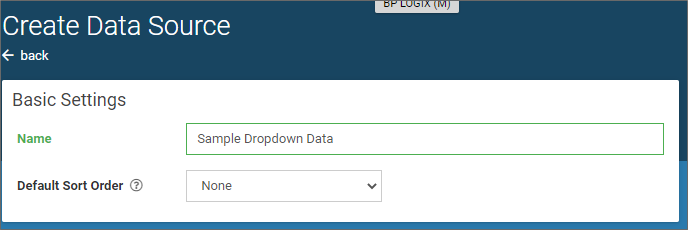
Set a Name for the data source, which, in the case of this example, will be Sample Dropdown Data, then click the Create button, which will open the new, blank data source.
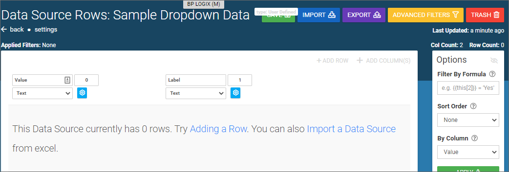
You can add rows manually to the data source, but in most cases, you'll want to import data, as we will in this example. Imported data sources must meet some required constraints to be imported:
Clicking the Import a Data Source link will open the import screen.
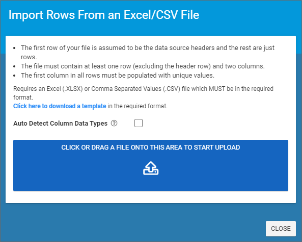
Click the button labeled, Click or drag of file onto this area to start upload. You can drag and drop files onto this button, or simply click the button and navigate to the Excel file using the Open dialog box. Assuming your Excel or CSV data meets the constraints specified above, the import will complete and the resulting data source will be displayed.
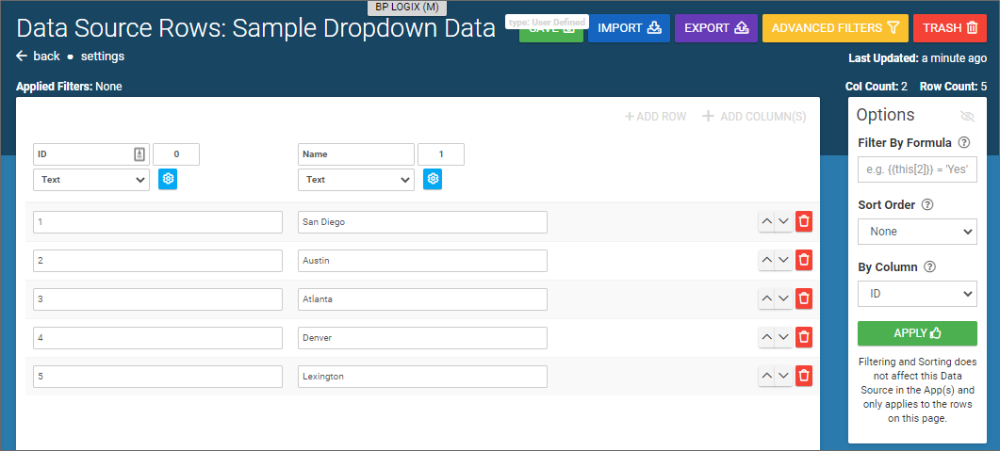
Click the Save button to save the data source information. You can navigate back to the Data Sources menu to see your new data source displayed in the list.
If you navigate to the Screens menu, you can hover your mouse over a Screen in the list to see editing options for that screen.
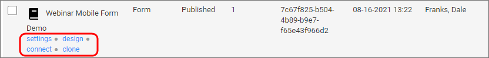
Selecting the design option will open the screen in design view. Since we have already published this form, we will need to click the New Version button to create a new version of this form that we can edit. Once we do so, the Screen will open in a fully editable format.
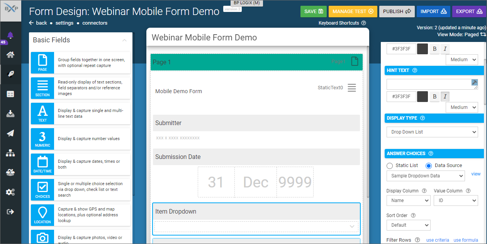
This Screen contains a Dropdown control named Item Dropdown. Clicking the control will select it, and will display editing options for this control on the right side of the screen. We can scroll down though the editing options until we reach the section labeled, Answer Choices. We can apply our new data source to fill this Dropdown control, using the following procedure.
Once you've done this you can click the Save button to save your changes, then click the Publish button to publish the new version of the Screen.
Once published, the updated form will synchronize to users of the Mobile Application, after which the new dropdown options will be available on the mobile form.
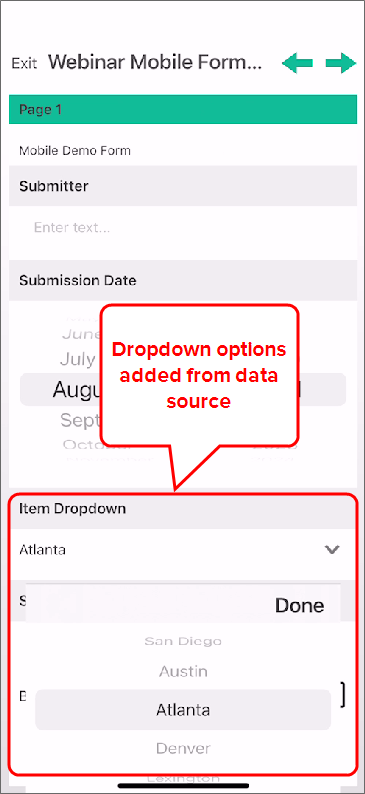